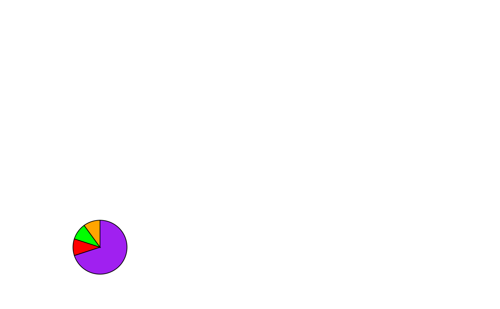
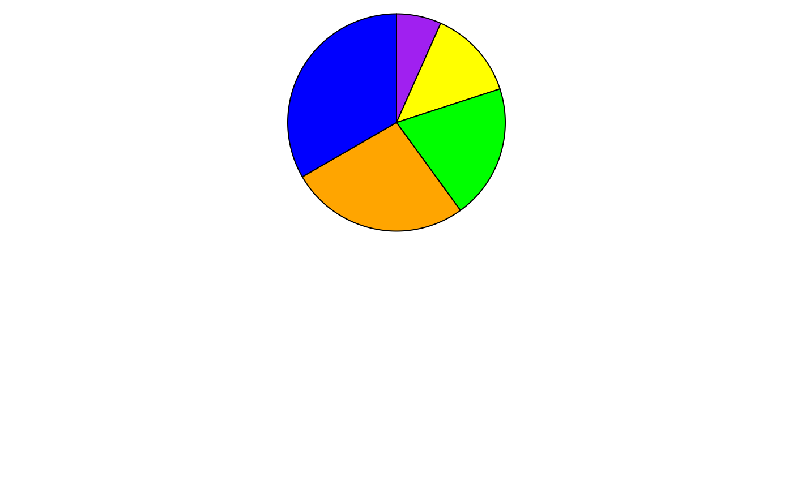
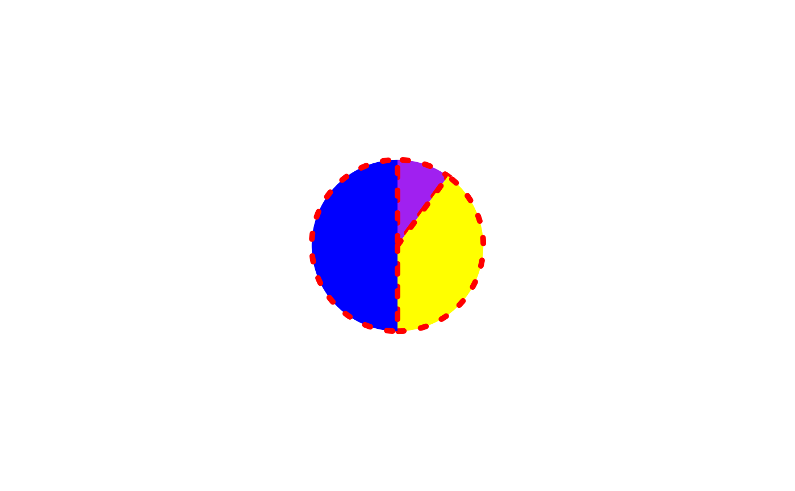
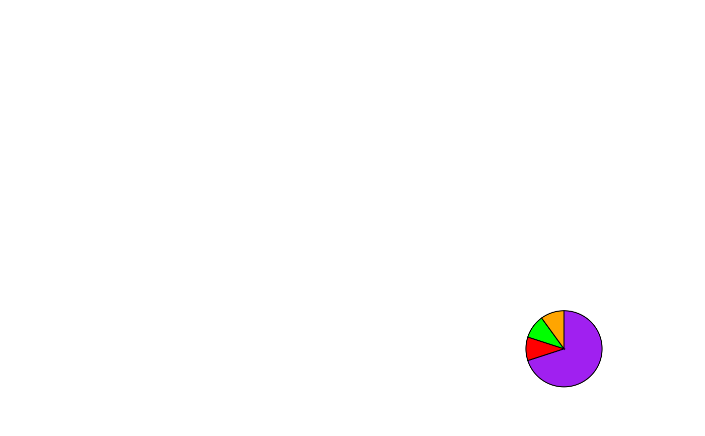

This function creates a pie-chart glyph. The proportions of the different slices are calculated automatically using the numbers in the values parameter.
Usage
pieGrob(
x = 0.5,
y = 0.5,
values,
radius = 1,
radius_unit = "cm",
edges = 360,
col = "black",
fill = NA,
lwd = 1,
lty = 1,
alpha = 1,
default.units = "npc"
)Arguments
- x
A number or unit object specifying x-location of pie chart.
- y
A number or unit object specifying y-location of pie chart.
- values
A numeric vector specifying the values of the different slices of the pie chart.
- radius
A number specifying the radius of the pie-chart.
- radius_unit
Character string specifying the unit for the radius of the pie-chart.
- edges
Number of edges which make up the circumference of the pie-chart (Increase for higher resolution).
- col
Character specifying the colour of the border between the pie slices.
- fill
A character vector specifying the colour of the individual slices.
- lwd
Line width of the pie borders.
- lty
Linetype of the pie borders.
- alpha
Number between 0 and 1 specifying the opacity of the pie-charts.
- default.units
Change the default units for the position and radius of the pie-glyphs.
Examples
library(grid)
grid.newpage()
p1 <- pieGrob(x = 0.2, y = 0.2,
values = c(.7, .1, .1, .1), radius = 1,
fill = c("purple", "red", "green", "orange"))
grid.draw(p1)

## Change unit of radius using `radius_unit` and slice colours using `fill`
## Note `values` don't need to proportions. They can be anything and
## proportions would be calculated
grid.newpage()
p2 <- pieGrob(x = 0.5, y = 0.75,
values = c(1, 2, 3, 4, 5), radius = 1,
radius_unit = "in",
fill = c("purple", "yellow", "green", "orange", "blue"))
grid.draw(p2)

## Change border attributes using `col`, `lwd`, and `lty`
grid.newpage()
p3 <- pieGrob(x = 0.5, y= 0.5,
values = c(10, 40, 50), radius = 20,
radius_unit = "mm",
col = "red", lwd = 5, lty = 3,
fill = c("purple", "yellow", "blue"))
grid.draw(p3)

## Use `alpha` to change opacity of pies
grid.newpage()
p4 <- pieGrob(x = 0.25, y = 0.75,
values = c(50), radius = 25,
radius_unit = "mm", edges = 36000,
col = "navy", lwd = 4, lty = "33",
fill = c("purple4"), alpha = 0.5)
grid.draw(p4)
## Use `edges` to increase resolution of pie-charts
grid.newpage()
p5 <- pieGrob(x = 0.8, y = 0.2,
values = c(.7, .1, .1, .1), radius = 1,
fill = c("purple", "red", "green", "orange"),
edges = 10000)
grid.draw(p5)
